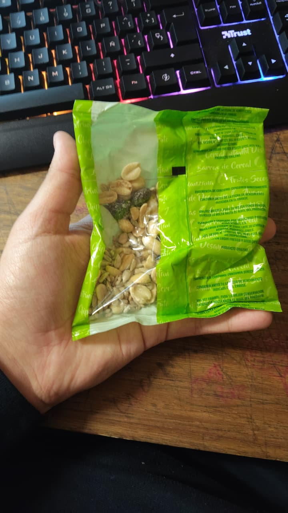
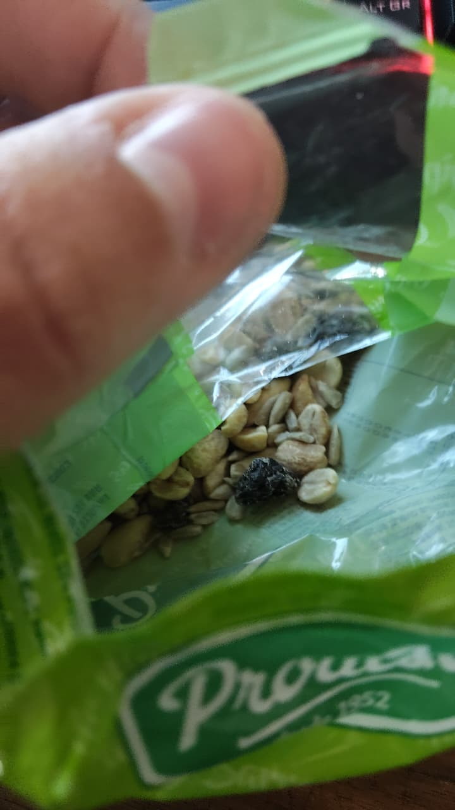
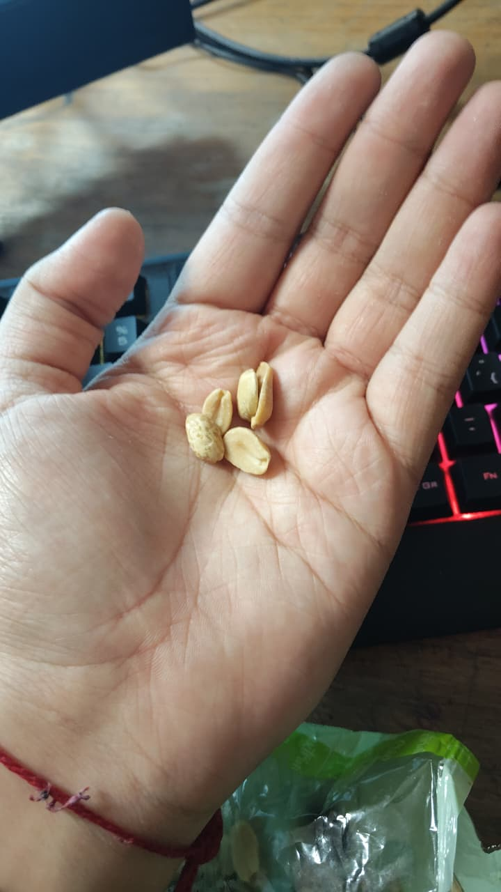

Introduction
I tried a small bag of nut mix, the kind you find at almost any supermarket or corner store in Chile but nobody buys it only the junaeb. The front says "frutos secos", so I expected a nice mix of nuts and raisins. It's a quick snack you can eat anywhere, so there is no restaurant here, just me at my desk.

Description
The bag is bright green with a small window, and through it you can see mostly peanuts. When I opened it, it smelled like plain roasted peanuts, nothing special. Inside there were peanuts, a few sunflower seeds and some raisins, dry pieces of fruit. The peanuts tasted mild and weren't very crunchy, and the raisins was chewy.

Opinion
Honestly, I didn't love it. There are way too many peanuts and very little of everything else, so it felt like eating a bag of plain peanuts. The raisins was the worst part, too chewy and a little thick. It isn't terrible and it fills you up, but I can't recommend it if you are looking for a tasty snack. I expected a better mix of flavors and textures, but this was just peanuts with a few seeds and some raisins fruit thrown in.
